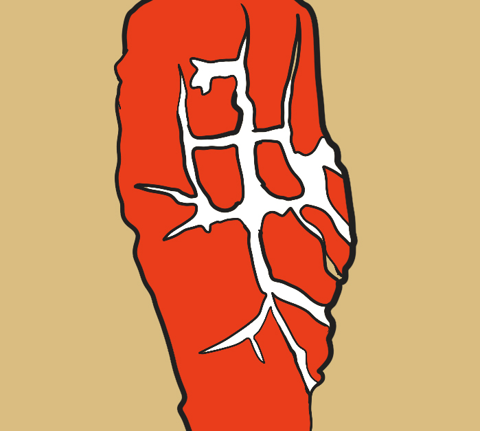
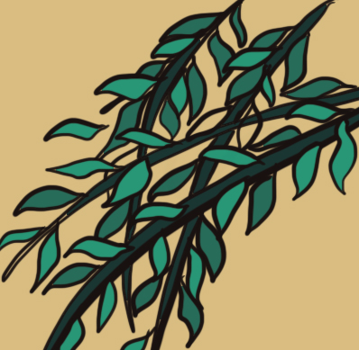
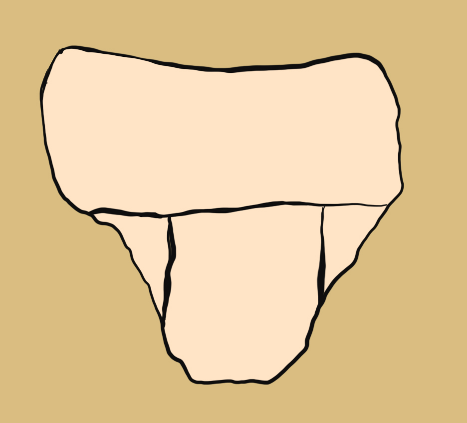
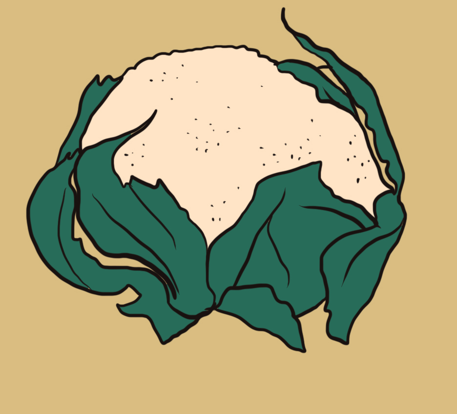

Inicio
Importancia de compostar
Jugar
Nivel 1
Nivel 2
Mapa
Compost Master
Nivel 1
¿Cómo jugar?
Arrastra los desechos que creas que pueden ir a la compostera. El resto desechos los puedes dejar fuera

Restos de carne

Restos de poda

Pañal

Restos de coliflor
Compostar
Compost Master
Nivel 1
Aciertos
Fallos